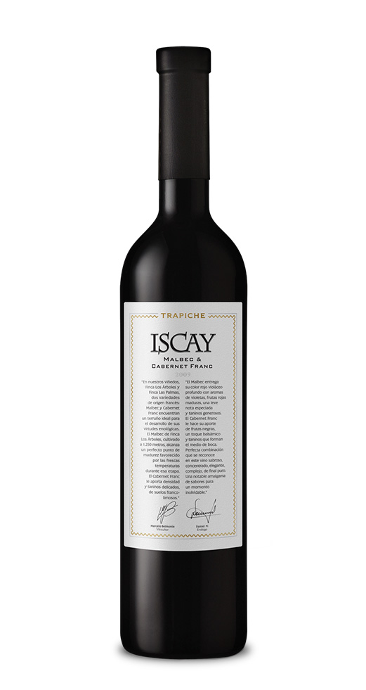
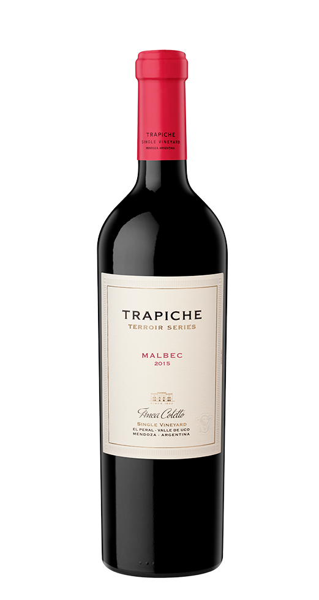

NOSOTROS
En esta pagina vas a encontrar mucha informacion sobre los mejores vinos de San Juan.
BODEGAS ASOCIADAS.


VINOS DE NUESTRA SECCION
BODEGA TRAPICHE

Isac - Malbec Cabernet Franc
De color púrpura intenso, este vino combina aromas a violetas, frutas rojas maduras, sutiles notas especiadas y taninos generosos. El Malbec y el Cabernet Franc hacen una perfecta combinación que resulta en un ejemplar elegante y de final diáfano.
$2.300

Terroir Series - Malbec
De color rojo violáceo intenso con aromas a frutos del bosque como moras y arándanos. En boca es fresco y redondo al comienzo con taninos dulces y tensos que le dan jugosidad y amplitud y elegancia en boca.
$4.000